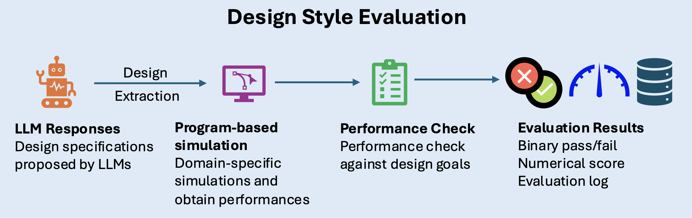

Toward Engineering AGI: Benchmarking the Engineering Design Capabilities of LLMs
NeurIPS 2025 (Datasets & Benchmarks Track)
1University of Illinois Urbana-Champaign (UIUC), 2University of Pennsylvania, 3UC San Diego, 4University of Michigan, 5Amazon AGI

In short
EngDesign is a benchmark that tests whether large language models (LLMs) can do real engineering design, not just answer textbook questions. Its tasks cover nine engineering domains, including electrical, mechanical, aerospace, civil and computer engineering, and each task states its design goals, constraints and performance requirements. Instead of comparing an answer to a key, EngDesign runs each model's design through simulation to check whether the design actually works.
Abstract
Modern engineering, spanning electrical, mechanical, aerospace, civil, and computer disciplines, stands as a cornerstone of human civilization and the foundation of our society. However, engineering design poses a fundamentally different challenge for large language models (LLMs) compared with traditional textbook-style problem solving or factual question answering. Although existing benchmarks have driven progress in areas such as language understanding, code synthesis, and scientific problem solving, real-world engineering design demands the synthesis of domain knowledge, navigation of complex trade-offs, and management of the tedious processes that consume much of practicing engineers' time. Despite these shared challenges across engineering disciplines, no benchmark currently captures the unique demands of engineering design work. In this work, we introduce EngDesign, an Engineering Design benchmark that evaluates LLMs' abilities to perform practical design tasks across nine engineering domains. Unlike existing benchmarks that focus on factual recall or question answering, EngDesign uniquely emphasizes LLMs' ability to synthesize domain knowledge, reason under constraints, and generate functional, objective-oriented engineering designs. Each task in EngDesign represents a real-world engineering design problem, accompanied by a detailed task description specifying design goals, constraints, and performance requirements. EngDesign pioneers a simulation-based evaluation paradigm that moves beyond textbook knowledge to assess genuine engineering design capabilities and shifts evaluation from static answer checking to dynamic, simulation-driven functional verification, marking a crucial step toward realizing the vision of engineering Artificial General Intelligence (AGI).
Citation
@inproceedings{guo2025toward,
title={Toward Engineering AGI: Benchmarking the Engineering Design Capabilities of LLMs},
author={Xingang Guo and Yaxin Li and Xiangyi Kong and Yilan Jiang and Xiayu Zhao and Zhihua Gong and Yufan Zhang and Daixuan Li and Tianle Sang and Beixiao Zhu and Gregory Jun and Yingbing Huang and Yiqi Liu and Yuqi Xue and Rahul Dev Kundu and Qi Jian Lim and Yizhou Zhao and Luke Alexander Granger and Mohamed Badr Younis and Darioush Keivan and Nippun Sabharwal and Shreyanka Sinha and Prakhar Agarwal and Kojo Vandyck and Hanlin Mai and Zichen Wang and Aditya Venkatesh and Ayush Barik and Jiankun Yang and Chongying Yue and Jingjie He and Libin Wang and Licheng Xu and Hao Chen and Jinwen Wang and Liujun Xu and Rushabh Shetty and Ziheng Guo and Dahui Song and Manvi Jha and Weijie Liang and Weiman Yan and Bryan Zhang and Sahil Bhandary Karnoor and Jialiang Zhang and Rutva Pandya and Xinyi Gong and Mithesh Ballae Ganesh and Feize Shi and Ruiling Xu and Yifan Zhang and Yanfeng Ouyang and Lianhui Qin and Elyse Rosenbaum and Corey Snyder and Peter Seiler and Geir Dullerud and Xiaojia Shelly Zhang and Zuofu Cheng and Pavan Kumar Hanumolu and Jian Huang and Mayank Kulkarni and Mahdi Namazifar and Huan Zhang and Bin Hu},
booktitle={Advances in Neural Information Processing Systems (NeurIPS), Datasets and Benchmarks Track},
year={2025}
}